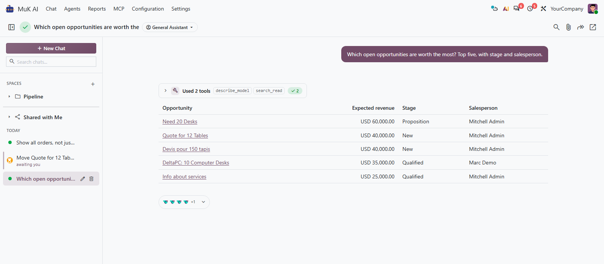
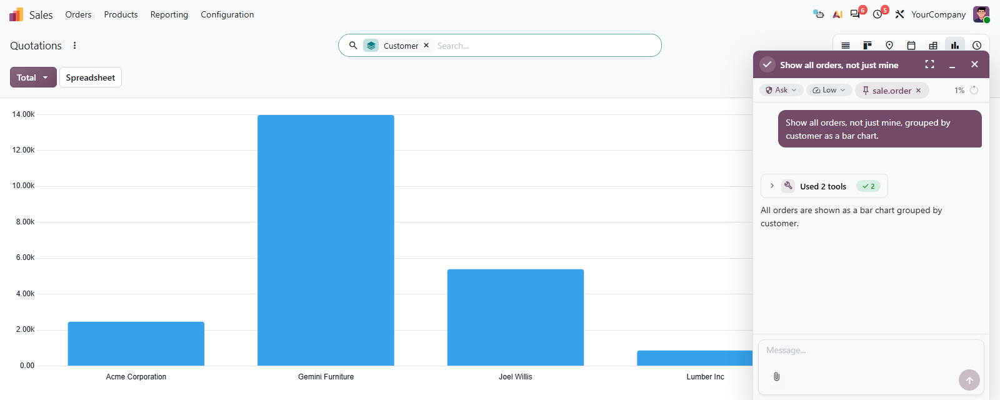
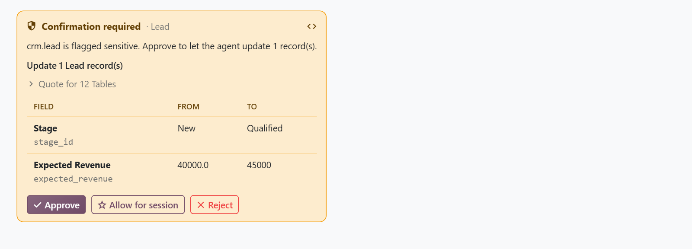
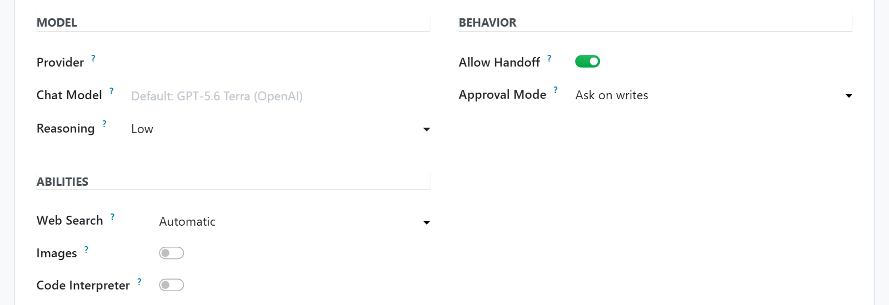

A chat inside Odoo that answers from your data and works on it: OpenAI, Anthropic or Google models on your own key, agents you set up, and a stop for your approval before it changes the records you protect.
Connect OpenAI, Anthropic or Google with your own API key. Answers stream in as they are written, and every turn shows what it cost.
Instructions, model, reasoning effort and tools per agent. A read-only agent cannot write, whatever it is asked.
On the models you mark as sensitive, the agent stops and shows you the change before it writes it.

The chat is a page of its own and a window beside any form or list. Both show the same conversation, so a question started on a record can end on the full page without losing a word.
The robot in the top bar opens a chat that knows the record or list you are on. Expand it, and the draft and its files come along.
File chats into spaces, each with its own default agent, and share a chat with colleagues who may read every step but not steer it.
Attach images, PDFs or text to a question. Every answer lists the records and pages it was built from, one click from each.
Rewind a chat to any message, branch it into a new one, regenerate the last answer, or search the conversation for a word.
A ring under the chat bar shows how full the context is and what the last turn cost. A full chat compacts itself and goes on.
Cap the rounds, the run time and the money one turn may spend, and the chats a user may start in a minute.
Ask for a filter, a grouping or a chart, and the list, kanban, pivot or graph in front of you changes in place. The agent drives Odoo's own search in your browser tab, so what it set stays in the search bar for you to keep or remove.
On a form, the window knows the record, so “this order” or “this customer” needs no explaining, and a record the agent opens for you becomes the new context.


Mark a model as sensitive, and every create, change, delete or method call an agent wants on it waits for you. The card names the record and shows each field as it is and as it would become.
Reject it, and the agent hears why and looks for another way. Every decision goes into the approval log with what was asked and what ran.
Allow for session lets the same kind of call through until the chat ends. The next chat starts with nothing allowed.
An agent holds the instructions, the provider and model, how hard the model thinks, the tools it may call, and whether it may search the web, draw images or run code. A general assistant comes with the module.
An agent can hand the chat to another agent that fits. Read-only is enforced by the server, not asked of the model, and every change to the instructions can be rolled back from the prompt history.

The assistant is the base the other MuK AI modules build on, and the same seams are open to a module of yours — behind the same agents, approvals and access rights.
Subclass ProviderBase and register it, and the provider shows up in the settings, on the agents and in the model catalogue.
A tool your module adds to muk_mcp is there for the agents at once, with the same access rights; one registry keeps a tool for the agents alone.
A tool can run in the user's tab instead of on the server, the way the view reshaping does. Register yours in muk_ai.client_tools.
What you get for free, and what has to be paid work.
Issues and merge requests are welcome on the public repository. They are read — but no response time is promised.
An agent built for your process, or a fix on a deadline, is paid work — quoted up front. Write to sale@mukit.at.
LGPL-3. Use it, change it, ship it inside your own work — no licence key, no database count.
Modules written for your process, on your Odoo version.
Odoo joined up with the systems you already run.
Hosting, deployment and upgrades you do not have to watch.
Your team taught the parts of Odoo they actually use.
An agreement, so an answer does not depend on who is free.
Odoo.sh or on-premise, Community or Enterprise, and an API key from OpenAI, Anthropic or Google. On Enterprise it runs beside Odoo's own AI apps, with its own icon and its own chats.
Paste the key under MuK AI › Configuration › Providers, set defaults and limits in the settings, then shape the agents and mark the sensitive models.
Depends on mail, bus, base_setup and muk_mcp. Install it like any other module; the providers, their models and a general assistant are there at once.
Open MuK AI › Chat, or the robot in the top bar on any screen, and ask. Answer an approval card when the agent wants to change a sensitive record.
Chats, spaces, agents and providers are records, and an upgrade keeps them, keys and space icons included.
MuK IT GmbH, Vienna. Author and maintainer.
Tell us the job, and we will tell you whether it needs an agent, a tool or a module of its own. MuK IT — Austrian Odoo partner, Vienna.